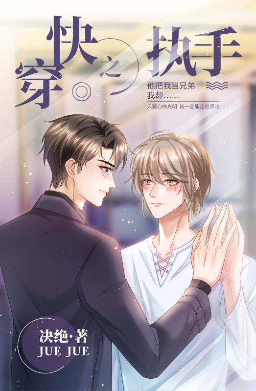

El alma del mejor amigo de Lu Yanzhou, Xie Chengze, se rompió en fragmentos y cayó en esos pequeños mundos. Para salvar a Xie Chengze, Lan Yanzhou se embarcó en el viaje para recolectar los fragmentos del alma de Xie Chengze.
Sin embargo, cometió un error en el proceso de recolectar los fragmentos de su alma. Se enamoró de los fragmentos de alma de Xie Chengze.
Xie Chengze dijo que cultivó el dao despiadado. Tenía un corazón frío y carecía de emociones, pero siempre lo había considerado un hermano. Aprovechó cuando la otra parte perdió sus recuerdos para enamorarse de él…
El fin del primer mundo, Lu Yanzhou, que estaba enamorado de Xie Chengze, estaba luchando: "Cuando Xie Chengze recupere sus recuerdos, ¿me dará una paliza?"
Después del fin del segundo mundo, Lu Yanzhou, que tenía otra relación romántica con Xie Chengze, tomó una decisión: “¡No hay absolutamente ninguna próxima vez! ¿Xie Chengze probablemente no romperá todas las relaciones conmigo?
El fin del tercer mundo, Lu Yanzhou estaba preocupado: "Estoy aquí para salvarlo ..."
El enésimo mundo terminó, Lu Yanzhou rompió el frasco y lo arrojó: “Espera hasta que Xie Chengze se recupere, iré tras él. Puede que haya una tasa de éxito del 1%, ¿verdad?
Xie Chengze: "..." Tomé tanto la iniciativa, ¿estás ciego?